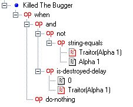

|
|
|
Advanced FRED2_Open HelpConditionalsVariables Cutscenes New ConditionalsWhat are the new conditionals? In the retail version of FRED2 all events began with the plain old boring when SEXP. You can do a lot with when. In fact until mid-2004 that was all you had. However there are some times when when just isn't enough. FS2_Open has added several new conditionals that fill in some of the gaps. Every-Time Every-Time is a version of when which continuously repeats itself for the entire duration of the mission. Unlike when an event using every-time can't ever become true or false. It is always incomplete regardless of however many times it has executed. Every-Time can basically be thought of as being the similar to a repeating event using When with a delay of 0. Due to the fact that events using Every-Time are never marked as true or false it can be used to solve problems with SEXPs like Key-Reset in repeating events. On the other hand you should never chain an event to one with every-time or use the event-true/event-false SEXPs with it as due to the fact it is always incomplete those events will never trigger. When-Argument / Every-Time-Argument Probably the two most confusing of the new SEXPs for most people, these two SEXPs are also amongst the most powerful. Both SEXPs allow you to do things that previously would have required a lot of tiresome fiddling with variables. In addition they also allow you to do things in one event that previously could have required hundreds.
You use these SEXPs like this. Suppose I had a scenario where I wanted something to happen if ever Alpha 1 got within 2000m of any of Cancer, Leo or Libra wings. What you could do is make an event like the one to the left for each wing. Then in a fourth event I'd check if any of the events had come true and then do whatever I wanted to happen. That works reasonably well but what if there were nine wings instead of three? I'd need ten events in total. Nine events checking to see if Alpha was close and one with an enormous or SEXP checking if any of those events had occurred. As you can see this would take a long time to make, uses up a large number of the SEXPs you're allowed in a mission and would be a pain in the neck to change if you wanted to add something to when the nine events trigger (suppose you later decide that it only matters where Alpha is after a certain capship arrives. You've now got to go back and edit all nine events).
When-Argument gives you a way to do this more simply. The SEXP allows you to declare a list of objects that the rest of the event will apply to. The event to the right replaces the four events I needed to check the distance from Leo, Cancer and Libra wings with a single event. If I wanted to do the same thing for nine enemy wings I wouldn't need any more events. I'd just add the names of the six extra wings below Libra. It's worth noting that there is no requirement for the argument to be a ship or wing name. It can be anything, subsystem name, message name, event name, whatever you want.
VariablesOne of the biggest changes in FS2_Open FREDding is that the ways you can use variables has been hugely improved. Support has been improved for string variables and a whole new class called persistent variables has been added. The problem is that if normal variables were confusing some people these ones confuse people even more. This section explains how to use the new variable features. You will need to be familiar with standard variables so if you haven't already read the variables section of the Advanced Retail FRED Help you should do so before reading this. What is a persistent variable? Standard variables can only be used in the mission they appear in. At the end of the mission FS2 cleans up by wiping the variable completely. The player specific variable is actually the simpler one of the two. Suppose in mission 2 of a campaign I set a player specific variable to 5. On loading mission 7 of the campaign the variable will still equal 5. Suppose I now set the value to 10. Shortly after this (while still in mission 7) the player gets killed. This time when the mission starts the variable equals 10. In other words PS variables always equal whatever they were last set to. The campaign specific variable works slightly differently. Taking the above example suppose in mission 2 of a campaign I set a player specific variable to 5. On loading mission 7 of the campaign the variable will still equal 5. Suppose I now set the value to 10. Shortly after this (while still in mission 7) the player gets killed again. On restarting the mission the variable is reset to 5 again. CS variables only permanently change when you move on to the next mission in the campaign. This makes them the more commonly used one of the two as persistent variables are generally used for recording hull percentages and other similar things which you don't wish to change should the mission require a restart. What is a string variable? While number variables store information string variables store one or more letters. You can store the names of ships, wings or even the argument used by one of the new conditionals and retrieve it later. Just in case that has you scratching your head let me give you an example of how powerful this could be.
This first event simply picks one of the 7 ships to be the traitor and records who it is in a variable called traitor. The True SEXP would be replaced by whatever conditions cause the traitor to be revealed. Because we are going to be using this variable in SEXPs like Has-Departed-Delay the default value must be the name of a ship that actually exists in the mission. I've used Alpha 1 cause we already know he's not the traitor so there is no possibility of confusion.

The second and third events are similar. They check that a traitor has been revealed (i.e that the variable is no longer Alpha 1) and then check to see what has happened to the traitor ship. If the check was omitted these events could be triggered by Alpha 1 jumping out early or being killed before the traitor is revealed. So there we have something that would have been incredibly tedious to set up otherwise which now works in 3 events thanks to string variables and the new conditionals.
CutscenesHow can I have an intro movie in my campaign? On startup FS2_Open looks for a file called intro. An avi or mpg with that name will be played on start up. A movie in moddir or moddir\data\movies will take precedence over the standard FS2 intro avi (assuming that you placed this in Freespace2\ or Freespace2\Data\Movies\) How can I play a movie before the start of a mission/before the start of my campaign? Movies other than the intro are specified in the campaign editor. Open FRED. Open the campaign editor and load\create the campaign file you want. Select the mission you want the cutscene to be played before and type in the name of the movie into the briefing cutscene box. How can I play a cutscene after my campaign ends? The FS2 ending cutscenes are hard-coded. They are triggered only when the campaign is called Freespace2 and the special End-Campaign SEXP is triggered in the mission (Not the end-campaign SEXP in the campaign editor BTW). The game then triggers a file called endpart1 and then decides between endprt2a and endprt2b depending on how the mission went |